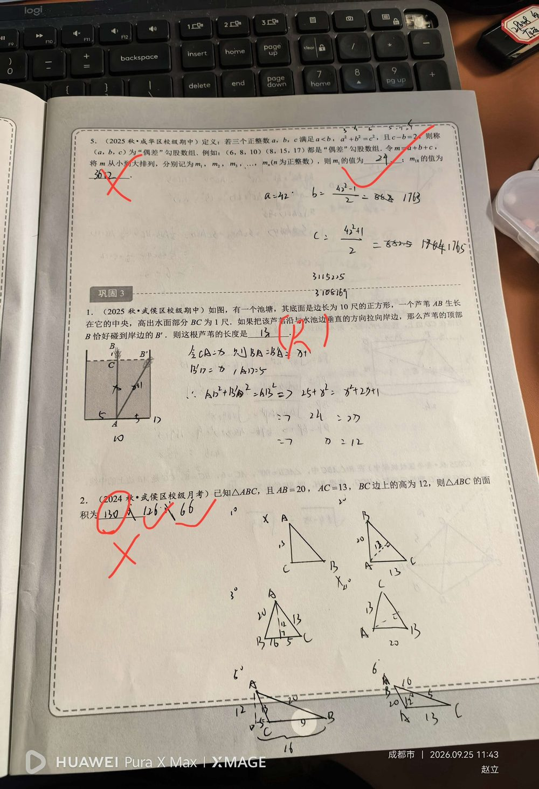

① AB = 20；② AC = 13；③ BC 边上的高 AD = 12。
求 △ABC 的面积。（若琳答 130 被判对、126 和 66 被判错；正确答案应为 「126 或 66」 两种情况）
【关键：高可能在形内，也可能在形外 —— 必须分类】 先由勾股定理求出两条「半底」： ① 在 Rt△ABD 中：BD = √(AB² − AD²) = √(20² − 12²) = √(400 − 144) = √256 = 「16」； ② 在 Rt△ACD 中：CD = √(AC² − AD²) = √(13² − 12²) = √(169 − 144) = √25 = 「5」。 【情况一：垂足 D 在边 BC 上（高在形内）】 BC = BD + CD = 16 + 5 = 21 ⇒ S = ½ × 21 × 12 = 「126」。 【情况二：垂足 D 在 BC 的延长线上（高在形外，∠B 为钝角）】 BC = BD − CD = 16 − 5 = 11 ⇒ S = ½ × 11 × 12 = 「66」。 ⇒ △ABC 的面积为 「126 或 66」。 （若琳填的 130 与两种情况都对不上；按题意「已知两边及第三边上的高」必须考虑垂足在延长线上的情形。）
① 「只算一种情况」：默认高在三角形内部，漏掉「垂足落在 BC 延长线上」的钝角三角形情形（这是本题最大的坑）； ② 分类时把 BC 写成 BD + CD 或 BD − CD 弄反； ③ 求 BD、CD 时被 20-13-12 这组数据迷惑，忘记各自用勾股定理； ④ 化简 √256、√25 出错； ⑤ 若琳的 130 属于「两条斜边直接相乘除以 2」的典型错误（½ × (20+13) × …），没有用到高。
① 勾股定理求直角三角形边长； ② 三角形面积公式 S = ½ × 底 × 高； ③ 「分类讨论思想」（高在形内 / 形外）； ④ 钝角三角形与其高的位置关系； ⑤ 数据设计：20-12-16 与 13-12-5 都是勾股数，是本题的破题点。 📌 出处：第二讲 勾股定理综合复习 题目2。同页「偶差勾股数组」题见上条；芦苇题（答 13）已答对，未单独录入。